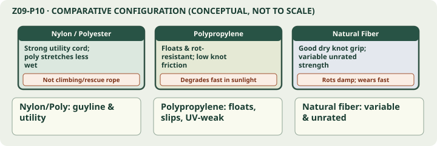

Z09-P10 · Tools and construction · Adapted historical material
Compare paracord, braided nylon, polypropylene and natural fibers
Match cordage material stretch, moisture behavior, knot grip and UV resistance to camp utility tasks.
When it applies · Choosing guyline, lashing, dry-bag tie-down and utility haul cordage for non-life-safety field use.
Equipment · Identified commercial utility cordage (e.g., nylon paracord, polyester guyline, polypropylene) or prepared natural fiber for training.

Actions
- Recognize that nylon stretches slightly when wet and absorbs modest shock cleanly, whereas polyester stretches less when wet (often preferred for taut tarp ridgelines).[K09, E20, ED]
- Recognize that polypropylene floats on water and resists rot, yet slips more easily in simple knots and degrades quickly under prolonged sunlight (UV) and friction heat.[K09, ED]
- Recognize that natural plant fibers (hemp, sisal, field-harvested inner bark) grip knots well when dry yet vary enormously in strength, fray under abrasion and rot when stored damp—zero universal load rating applies.[K09, ED]
Failure recognition · Using slick UV-faded polypropylene twine with a sloppy knot on a storm-exposed ridge tarp, or assuming camp paracord equals certified climbing rope.[K09, E16]
Verify · Confirm the cordage matches wet/dry stretch and knot-holding needs and stays strictly within non-life-safety utility use.[K09, ED]
Stop or change course · Reject frayed, sun-chalked, melted or unknown-history salvaged cordage for any overhead or tensioned utility load.[K09, K08]
Evidence and editorial notes
- E16 · NWS · Wind Safety (current web edition)
- Section: Wind Safety > High Wind Hazards · Conditions: Forecast or developing high winds, squalls, or straight-line winds
Support: High winds topple trees, loft debris, and stress lightweight shelters beyond fabric and anchor limits; relocate out of timbered fall zones and into substantial shelter before gusts peak.
Limitations: Tents and tarps lack standardized wind-speed survival guarantees across soil types and pitch angles. · Conflicting evidence: None; avoids unvalidated mph ratings for improvised pitches.
Editorial note: Drives high-wind shelter inspection, guying limits, and abandonment thresholds. · Specialist reviewer: Weather safety and shelter equipment
Primary source · checked 2026-11-24 - E20 · NPS · Camping: What to Bring (current web edition)
- Section: Camping: What to Bring > Shelter and Sleep System · Conditions: Overnight camping across three-season and cool conditions
Support: Match tent/tarp, groundsheet, sleeping pad, and sleeping bag ratings to expected night lows and precipitation; test pitching and inspect poles, zippers, and stakes before departure.
Limitations: Manufacturer comfort ratings assume dry insulation, ground pad use, and adequate caloric intake. · Conflicting evidence: None; reinforces pre-trip inspection and dry-sleep separation.
Editorial note: Anchors manufactured shelter selection, groundsheet fit, and gear readiness. · Specialist reviewer: Shelter equipment and field education
Primary source · checked 2026-11-24 - K08 · OSHA · Hand and Power Tools (OSHA 3080) (agency PDF)
- Section: Personal Protective Equipment and Work Area Control · Conditions: Cutting, splitting, striking and rigging operations
Support: Maintain stable footing, eye and hand protection appropriate to flying chips or snapped cordage, and clear bystanders outside the swing or snap-back zone.
Limitations: Field kits often lack shop PPE, requiring slower conservative technique and lower-energy methods. · Conflicting evidence: None; drives snap-back and work-circle exclusion zones in Z09.
Editorial note: Enforces conservative work circles and snap-back clearance. · Specialist reviewer: Tool safety and occupational safety
Primary source · checked 2026-11-24 - K09 · USDA Forest Service · Handtools for Trail Work (0523-2810-MTDC) (agency handbook)
- Section: Cordage, Anchors and Rigging Boundaries · Conditions: Non-life-safety camp lashing, tarps, haul lines and tie-downs
Support: Cordage strength drops significantly at knots, sharp bends, wet fibers, UV exposure and abrasion; inspect fibers before loading and never use unrated camp cord or improvised bindings for life-safety suspension or climbing.
Limitations: No universal breaking strength applies to natural plant fibers or weathered salvaged rope. · Conflicting evidence: Counters folklore claims equating improvised cordage to rated climbing rope.
Editorial note: Separates camp utility lashing/hauling from life-safety rigging. · Specialist reviewer: Rigging safety and materials mechanics
Primary source · checked 2026-11-24
Source lineage · USFS cordage boundaries and B007A/B008; adapted historical material · Classification · Adapted historical material.